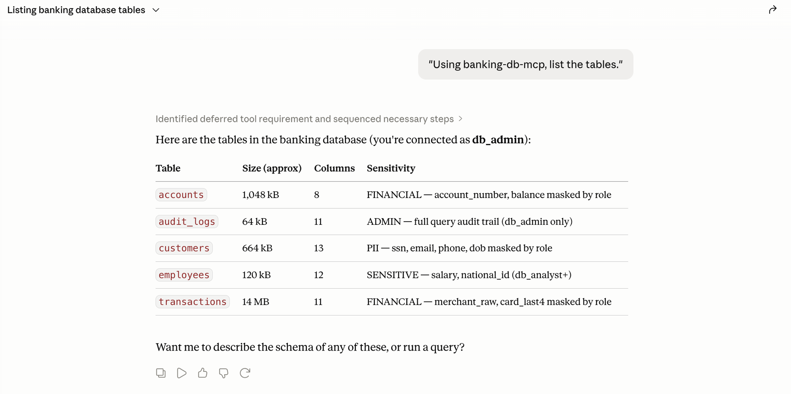
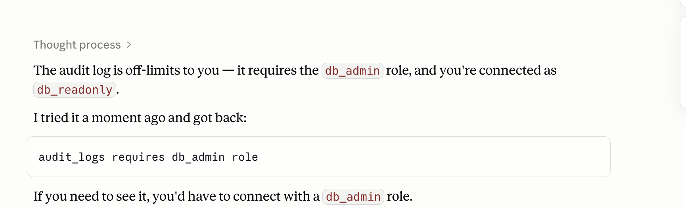

Give an AI assistant tools to query your production database and you hit a wall that has nothing to do with the model. The agent connects through one shared "service account" with broad access — and that quietly breaks compliance in three places at once. This project is a runnable answer to that problem.
01The problem with service accounts
The convenient path — one pooled database login that every request shares — fails an auditor on three distinct counts:
Three ways a shared account breaks compliance
- No real authentication. The database never sees the actual person behind the query — only the service account. "Who ran this?" has no honest answer.
- Coarse authorization. That one account can read everything. There's no way to say this analyst may see masked PII while that admin sees it in full — the grant is all-or-nothing.
- Fake audit trail. Every row in the access log reads
svc_account, notalice@bank. The trail SOC 2 / PCI / GDPR actually demand — which human touched this record — doesn't exist.
02The pattern: principal propagation
The fix is an old idea from enterprise SSO, applied to agents: carry the end user's verified identity all the way to the source, and enforce the three controls where the data lives — not in app code that an auditor has to take on faith.
Who is it?
The user logs in through the identity provider (Keycloak / OIDC). Their token, not a shared secret, rides the request to the data source.
What may they see?
Roles in the token decide access — full PII for an admin, masked columns for an analyst, redacted for read-only. Per-tool RBAC on top.
What did they do?
Every query is logged against the real human — user, role, and exactly which sensitive columns were masked. An immutable per-principal trail.
03See it work
The demo is a FastMCP server over a synthetic PostgreSQL banking database, driven live from Claude Desktop. Login is native MCP OAuth — protected-resource discovery, dynamic client registration, a browser PKCE flow — so there's nothing to paste; the client discovers Keycloak and caches the token itself.


db_admin. The guardrail denies the tool, not just the data, and explains why.Audit at the source
Asking the server for its audit log returns a trail attributed to the real principal — the literal "who accessed this customer's data, and what were they allowed to see?" answer:
| User | Role | Query | Masked cols |
|---|---|---|---|
| alice@banking.demo | db_admin | SELECT first_name, last_name, ssn, email … | — none — |
| bob@banking.demo | db_analyst | SELECT ssn, email, phone, date_of_birth … | ssn, email, phone, dob |
| carol@banking.demo | db_readonly | SELECT ssn, email, phone, date_of_birth … | ssn, email, phone, dob |
Empty "masked cols" for db_admin means unmasked access; populated for the lower roles records exactly what was redacted. AuthN, AuthZ, and audit, in one row each.
04How far it goes — two tiers
The project is built in two tiers, both demonstrated. The honest distinction between them is the whole point — and the more interesting half is the one that doesn't quite run from a browser yet.
Tier 1 — app-enforced
Any Postgres · live in Claude Desktop
- OIDC login (browser PKCE + DCR), role-based PII masking, per-tool RBAC.
- Audit trail attributed to the real OIDC user, independent of the DB connection.
- Honest caveat: the database connection is still a pooled
mcp_user— masking and audit live in the app layer here, not the engine.
Tier 2 — DB-enforced
Postgres 18 · no service account
- The user's identity reaches Postgres itself via SASL
OAUTHBEARER— the DB authenticates the user, trusting Keycloak. - Authorization is real column
GRANTs:SELECT ssnasdb_readonlyis denied by the engine, not app code.current_useris the real user. - Honest caveat: proven via a protocol-level client, not yet the browser flow — mainstream Python drivers don't speak
OAUTHBEARERyet.
05The detail I'm proudest of
Tier 2 has a sharp edge: asyncpg and psycopg3 can't speak Postgres's OAUTHBEARER SASL mechanism yet, so there was no off-the-shelf way to open a per-user, token-authenticated connection. So I wrote one — a ~120-line Postgres wire-protocol client (pgwire.py) that does the token-first SASL handshake by hand. That's the piece that makes "the database authenticates the actual user" real today instead of theoretical.
Around it: RFC 8693 token exchange to re-audience the user's token for the database, Keycloak Authorization Services (UMA) so the IdP makes the authz decision and Postgres trusts it, and a clone-and-run bring-up (./up.sh) that mints random local credentials so nothing sensitive is ever committed.
06What this is — and isn't
It's a demo lab, and worth being precise about. The data is synthetic (Faker), the credentials are generated locally at bring-up, and it isn't hardened for production deployment. There's no public live demo — it runs on a local Docker + Keycloak + Traefik stack, so the screenshots and the source tell the story. What it is is a correct, working reference for the pattern enterprises keep asking about: let agents reach regulated data as the user, and prove who saw what. That's the SOC 2 / PCI / GDPR question, answered at the data source.
This is part of a build-in-public series on production-grade agentic platforms. The companion benchmark work — how far local models scale on one machine — is over in the MLX dashboard.